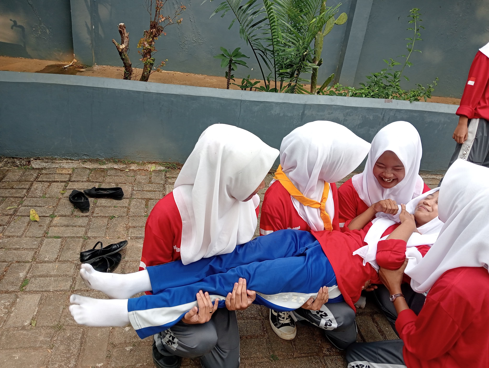
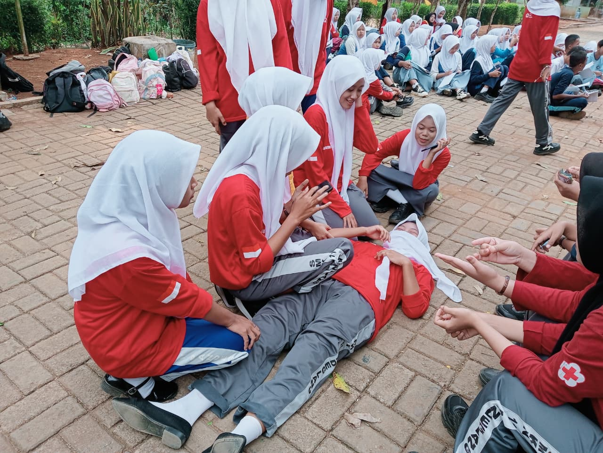

TENTANG KAMI
Palang Merah Remaja (PMR) merupakan wadah kegiatan remaja untuk mengembangkan jiwa kemanusiaan, kepedulian, keterampilan, dan semangat untuk membantu sesama.
Menjadi organisasi PMR yang aktif, peduli, terampil, dan berjiwa kemanusiaan.
Meningkatkan kepedulian terhadap sesama, mengembangkan keterampilan anggota, serta aktif dalam kegiatan kemanusiaan.
AKTIVITAS KAMI
Berbagai kegiatan yang dilakukan oleh anggota PMR SMKN 11 Pandeglang.
Melatih keterampilan anggota dalam memberikan pertolongan pertama kepada orang yang membutuhkan.
Kegiatan sosial sebagai bentuk kepedulian dan pengabdian kepada masyarakat.
Mendukung kegiatan donor darah dan meningkatkan kepedulian terhadap sesama.
Mengembangkan pengetahuan, keterampilan, dan karakter anggota PMR.
DOKUMENTASI
Dokumentasi kegiatan PMR SMKN 11 Pandeglang.

